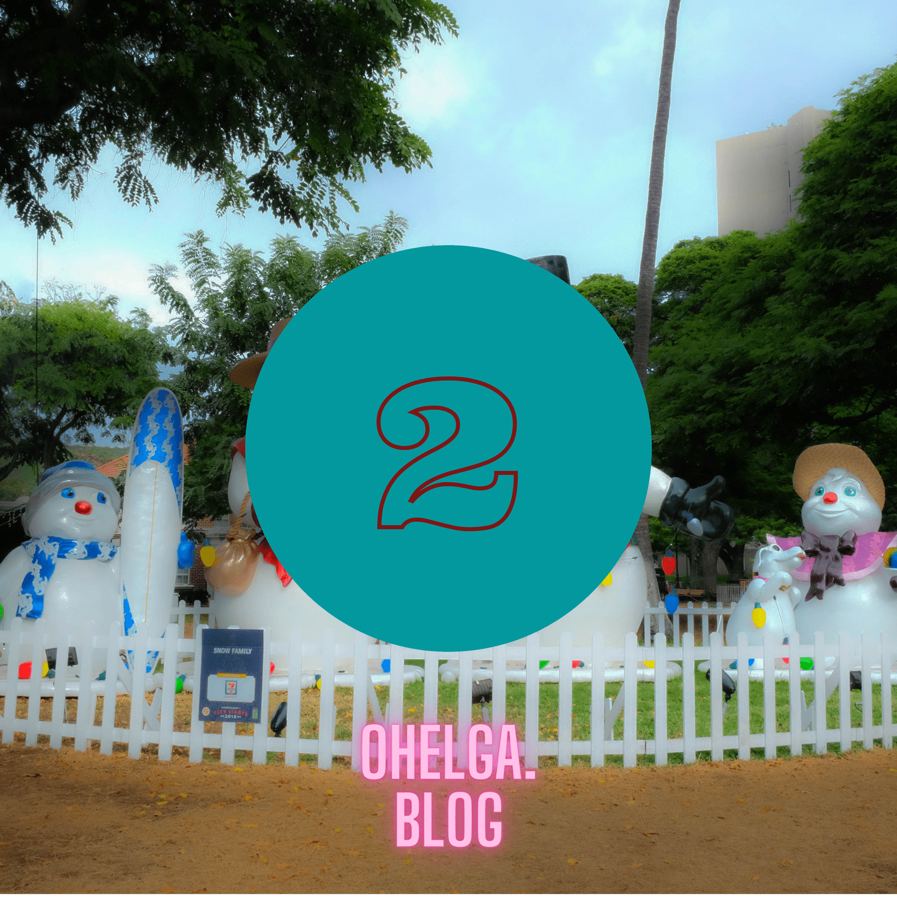

Tästä kaikki alkoi.
Tästä kaikki alkoi, ranskaksi! Johanna får Hollywood-vibbar av den här versionen. Ja Tomi lähtee ratsastamaan.
Kuuntele kappaleet
Apple Music:
Georges Thill: Cantique De Noel
Spotify (OBS: Spotifyn versio saattaa olla eri!):
Georges Thill: Cantique De Noel
Scrolla ner för att beställa vår spellista ↓

Kommentit / Kommentarer (2)
<p>Trots stenkakeknastret: den här har ju känsla, och energi – kanska är det det relativt snabba tempot? Jag vill korrigera det föregående till att bara operasångare borde få sjunga den här låten. Inte bara Pavarotti utan också hans kollegor alltså.</p>
<p>Pavarotti och kollegorna och... kanske det kommer någon ännu i någon lucka som du kan tänka dig att ha med på listan över godkända? :)</p>